Could Ye Not Watch One Hour
Jesus asked three fishermen for one thing. They failed inside an hour.

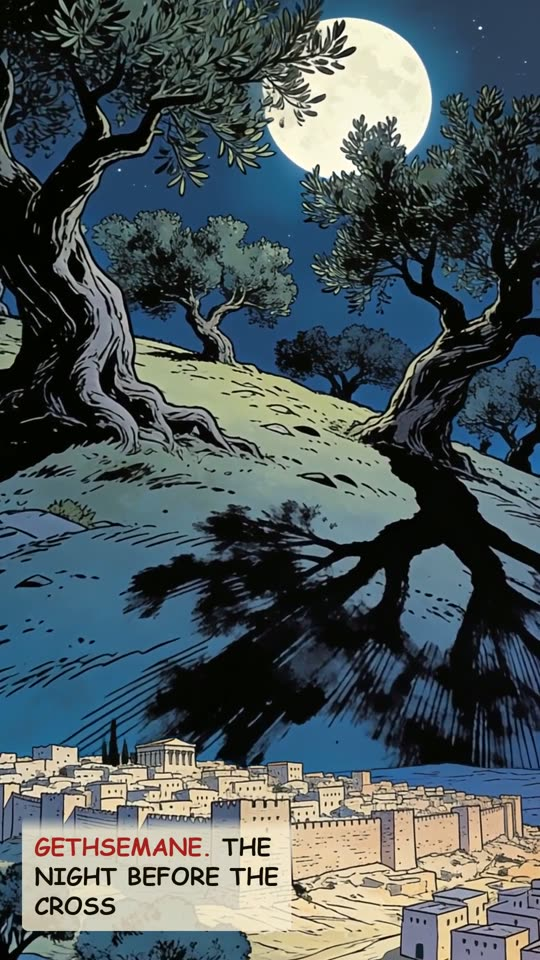
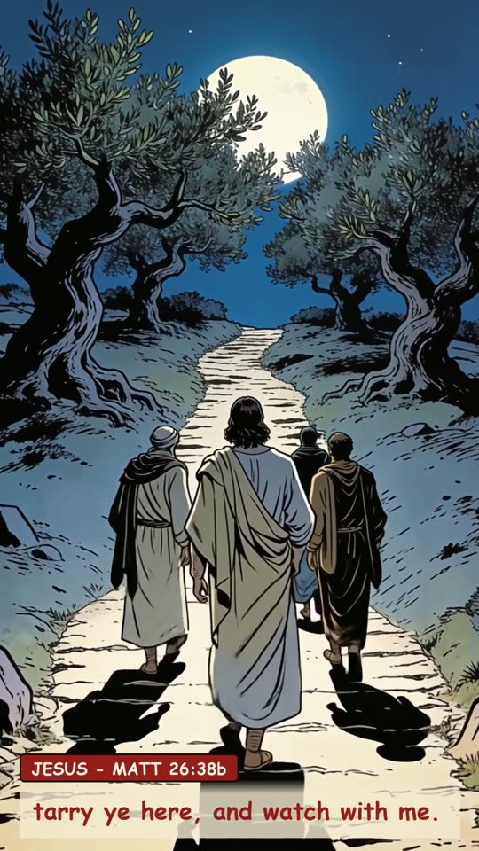
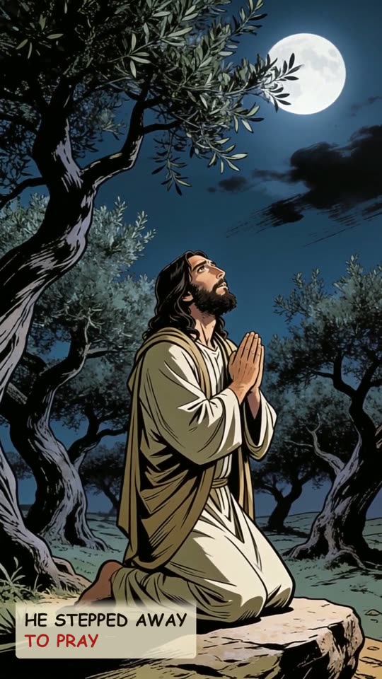
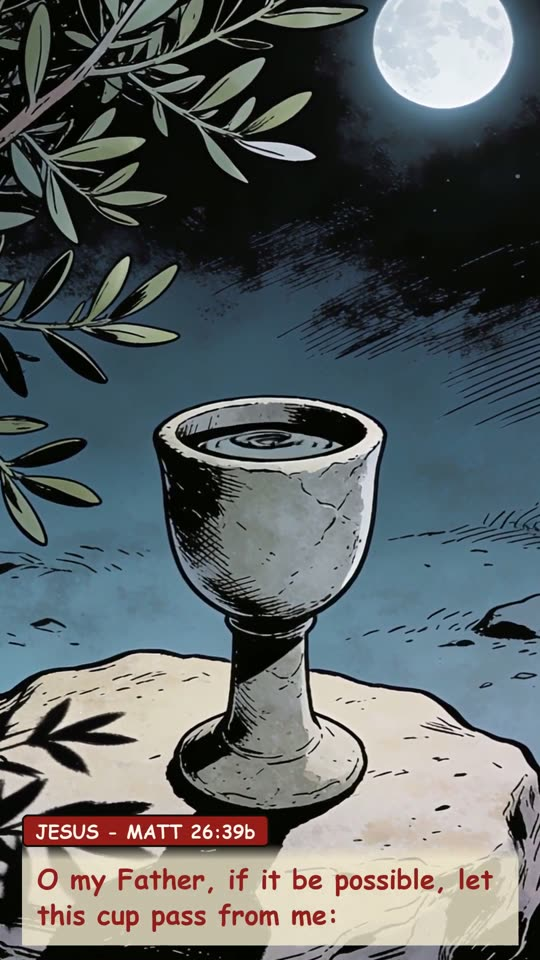
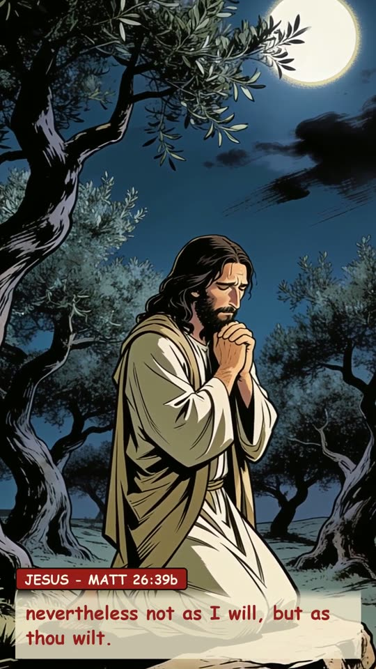
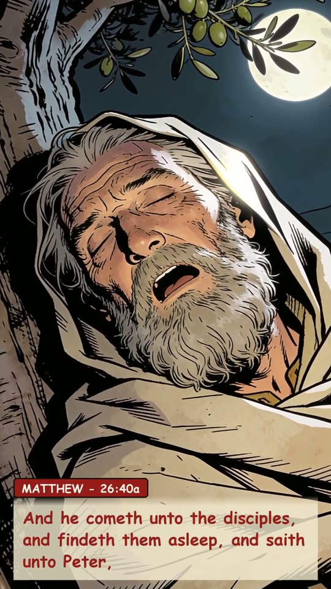
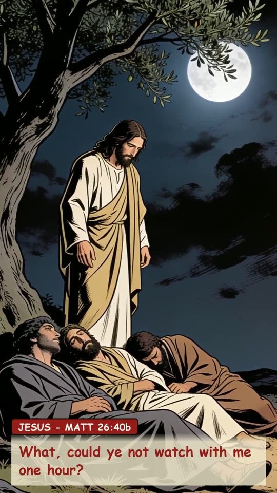
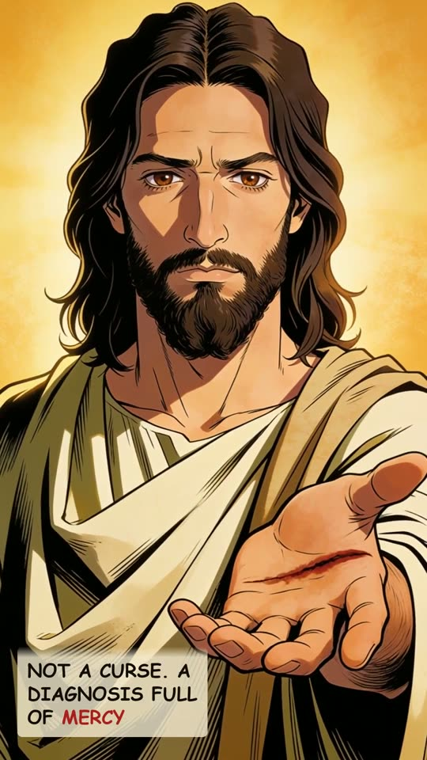
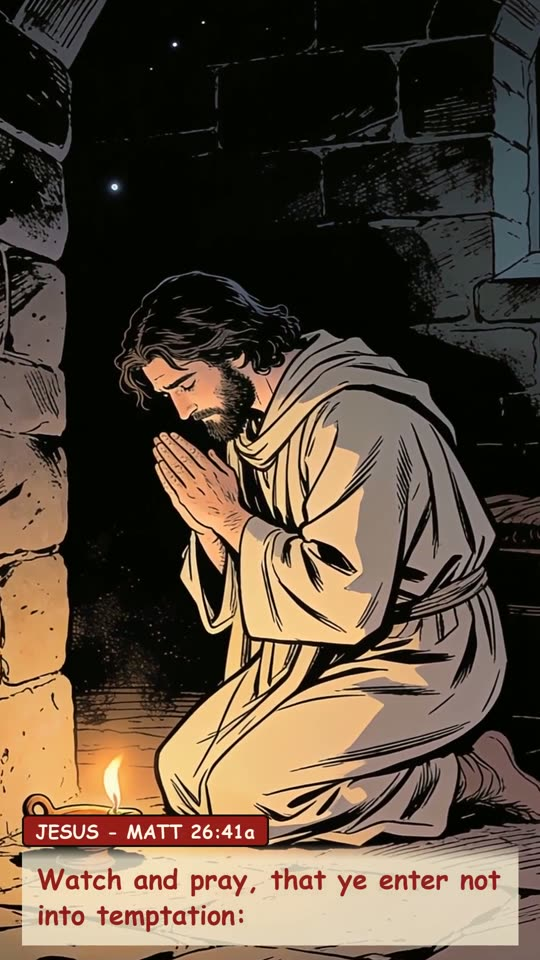
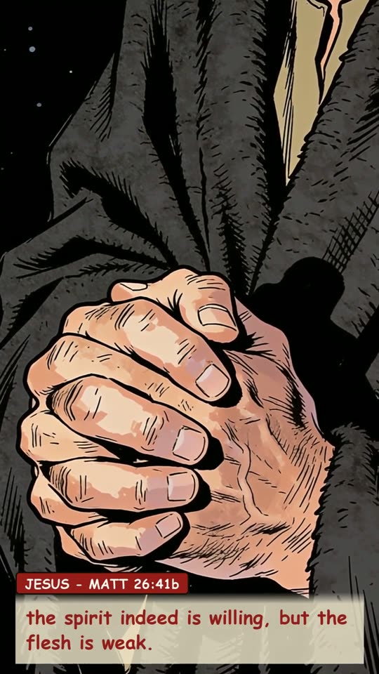
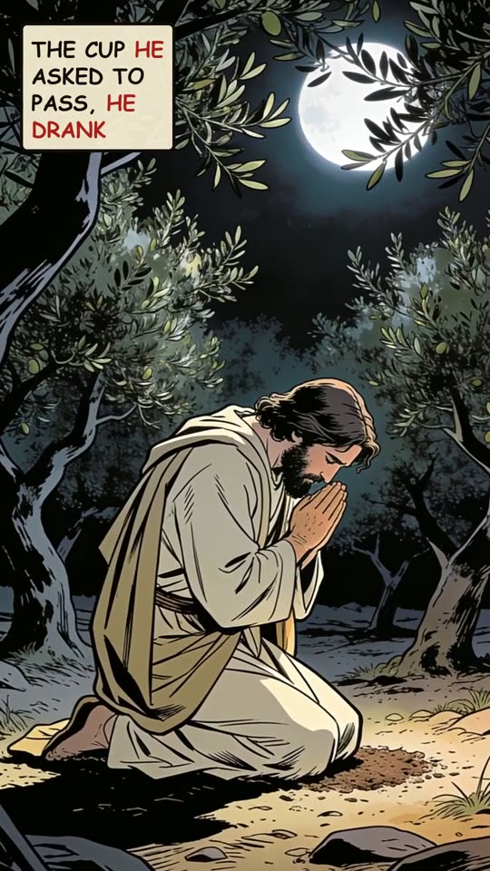
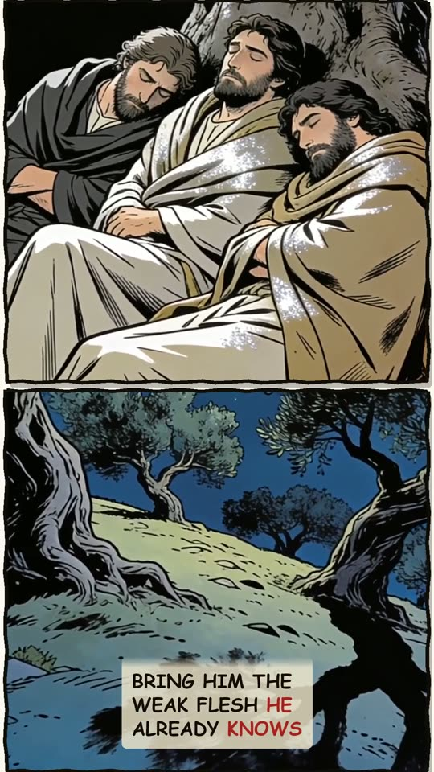
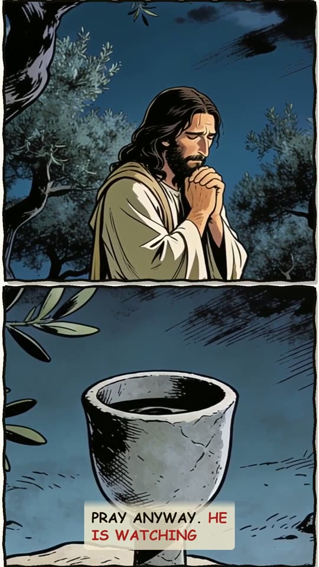
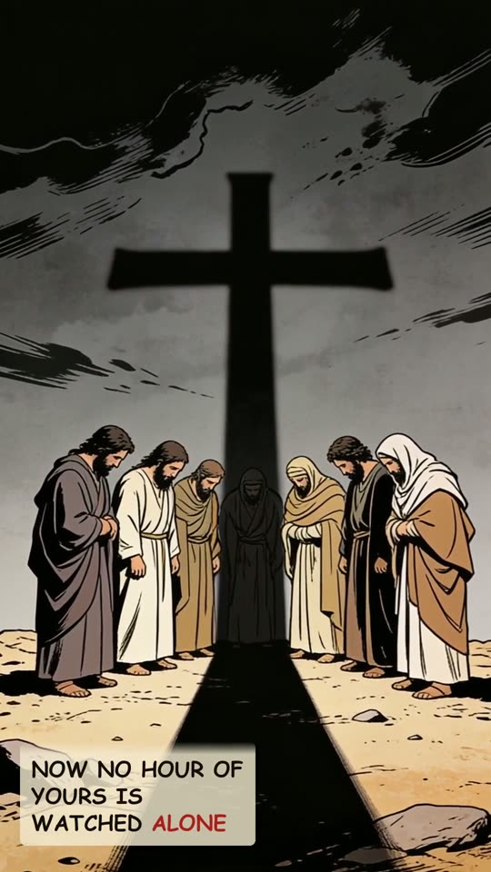
The narration
Jesus asked three fishermen for one thing. They failed inside an hour. Gethsemane. The night before the cross. tarry ye here, and watch with me. Then he stepped away to pray. O my Father, if it be possible, let this cup pass from me: nevertheless not as I will, but as thou wilt. And he cometh unto the disciples, and findeth them asleep, and saith unto Peter, What, could ye not watch with me one hour? Not a curse. A diagnosis full of mercy. Watch and pray, that ye enter not into temptation: the spirit indeed is willing, but the flesh is weak. He returned to the same prayer. The cup he asked to pass, he drank. On the cross. For you. So bring him the weak flesh he already knows. When you cannot watch, pray anyway. He is watching. He watched that hour alone. Now no hour of yours is watched alone.